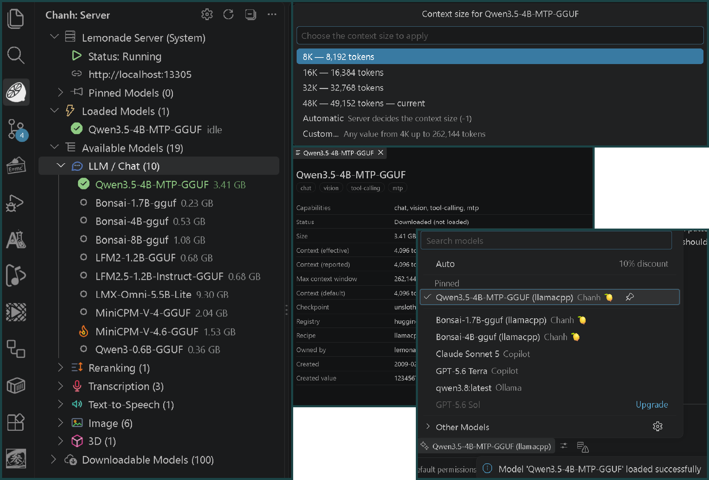

Local server, managed
Start, stop and monitor Lemonade Server from the sidebar. Connect to the system install, use the managed lemond binary, or point at any URL.
Chanh runs a Lemonade Server on your machine and brings local models into VS Code. Chat, agent mode, vision and tool calling — without sending your code to the cloud.
Chanh handles the server, the models and the VS Code integration. You stay in your code.
Start, stop and monitor Lemonade Server from the sidebar. Connect to the system install, use the managed lemond binary, or point at any URL.
Chat, vision, tool-calling, embedding, transcription, speech, image and 3D models — loaded, installed, or one click from download.
Tool-calling models appear in VS Code's model picker under Chanh 🍋, so agent mode streams and calls tools locally.
Inference stays on 127.0.0.1. No account, no prompt uploads and no cloud round-trip by default.
Set per-model context sizes, pin a CUDA, Vulkan or CPU backend, and watch live CPU, GPU and memory telemetry.
Download once, then keep working without a connection. Weights, settings and chat history stay on your machine.
A 1:57 walkthrough recorded against the real extension and a live local server. It is coming to YouTube — until then, here is a still from the recording.
The model manager lives in the sidebar. Everything else is native VS Code: chat, the model picker, command palette and settings.

A clickable, self-contained mockup of the extension. Simulated models, downloads, quick picks and settings — no server or VS Code required.

Install the extension, pick a model, and start using local inference. No API key, no account.
Get it from the VS Code Marketplace or Open VSX, or run the command on the right.
Open Chanh in the activity bar. Download or load a chat model; Chanh connects to — or starts — Lemonade Server.
Type @chanh in Chat, or select a Chanh model in the picker for agent mode.
Yes. The extension is MIT-licensed and free to use. Lemonade Server is also free. Individual model weights have their own licenses — check the model you download.
By default, prompts and code go only to the Lemonade Server running on your machine. Chanh has no account, no prompt telemetry and no cloud fallback. A custom server URL is the only exception — traffic goes wherever you point it.
No. Lemonade can run on CPU, CUDA, Vulkan or ROCm. Chanh lets you pick a backend per recipe, and shows live CPU/GPU/memory utilization in the sidebar.
Chat and instruction models, vision models, tool-calling models for agent mode, embeddings, rerankers, transcription, text-to-speech, image generation and 3D — depending on your Lemonade build and hardware.
Yes. Keep chanh.serverMode on LEMONADE to connect to the system server, use LEMOND to let Chanh manage its bundled binary, or CUSTOM for any URL.
VS Code 1.140 or newer on Windows, macOS and Linux. Chat and agent mode use VS Code's native chat and language-model APIs.
Bring a local AI stack into VS Code — no account, no cloud, no compromise.